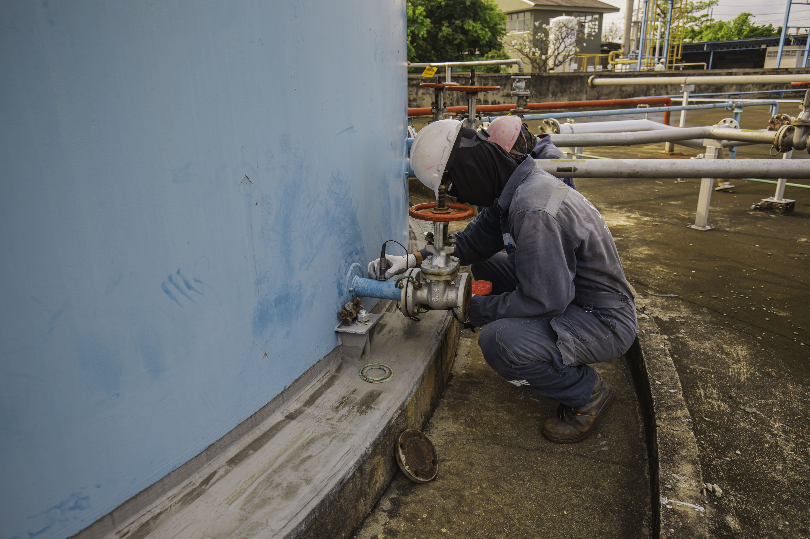
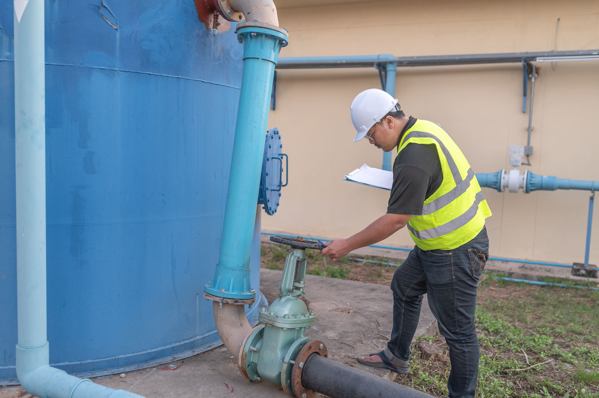

عزل خزانات مياه الشرب بالرياض

عزل خزانات مياه الشرب من الضروريات التي تلزم للخزان وذلك للحفاظ على المياه من الهدر دون فائدة
ومنها أيضا المحافظة على المنزل من التلف نتيجة تسريب المياه وعدم تسريب المواد الغريبة
إلى المياه للمحافظة علي حياة الانسان ولكي تتم عملية عزل خزانات مياه الشرب على أكمل وجه يجب أن تمر بعدة مراحل منها:


